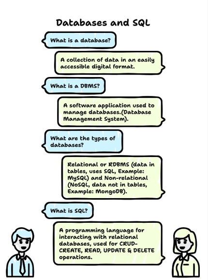

What is DATABASES?
A collection of data in a format which can be easily accessed digitally.
What is DBMS?
Database Management System is a software used to manage databases.
What are the main types of database?
1. Relational Database
-data stored in tables,
-known as RDBMS (Relational Database Management System),
-e.g. MySQL, Oracle
2. Non-relational database
-data not stored in tables,
-known as NoSQL,
-e.g. MongoDB
What is SQL?
Structured Query Language (SQL) is a programming language used to interact with relational databases. It performs CRUD operations. -Create - Read -Update -Delete
What is SEQUEL?
Structured English Query Language, developed by IBM, also known as SQL.
What is DDL, DQL, DML, DCL, TCL?
In SQL, commands are categorized into five sub-languages based on their specific functionality:
1.DDL(Data Definition Language): It simply deals with descriptions of the database schema.
CREATE, DROP, ALTER, TRUNCATE, RENAME.
2.DQL(Data Query Language): Used to fetch data from the database.
SELECT, FROM, WHERE, GROUP BY.
3.DML(Data Manipulation Language): Used to manipulate the data stored in database tables.
INSERT, UPDATE, DELETE
4.DCL(Data Control Language):GRANT and REVOKE permission to user.
5.TCL (Transaction Control Language): start Transaction, commit, rollback.
Database related queries
1. CREATE DATABASE databse_name;
2. CREATE DATABASE IF NOT EXISTS databse_name;
3. DROP DATABASE databse_name;
4. DROP DATABASE IF EXISTS databse_name;
5. SHOW DATABASES;
6. SHOW TABLES;
CONSTRAINTS
1.NOT NULL: column can not have null values
2.UNIQUE: All values should be different
3.PRIMARY KEY: It is a column in a table which uniquely identifies each row and it should be NOT NULL
CREATE TABLE student (
id INT PRIMARY KEY,
name VARCHAR (50)
);
4.FOREIGN KEY: It is a column and a set of column in a table which refers to PRIMARY KEY in another tables. It can have NULL VALUES and can have duplicates values.
CREATE TABLE student (
city_id INT PRIMARY KEY,
FOREIGN KEY (city_id) REFERENCES city (id)
)
5.DEFAULT: Set the default values of the column
6.CHECK: It can limit the values allowed in the column.